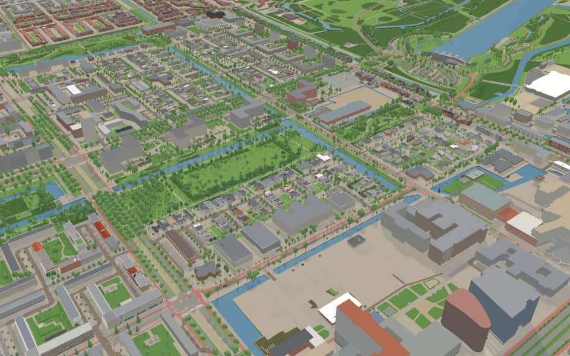
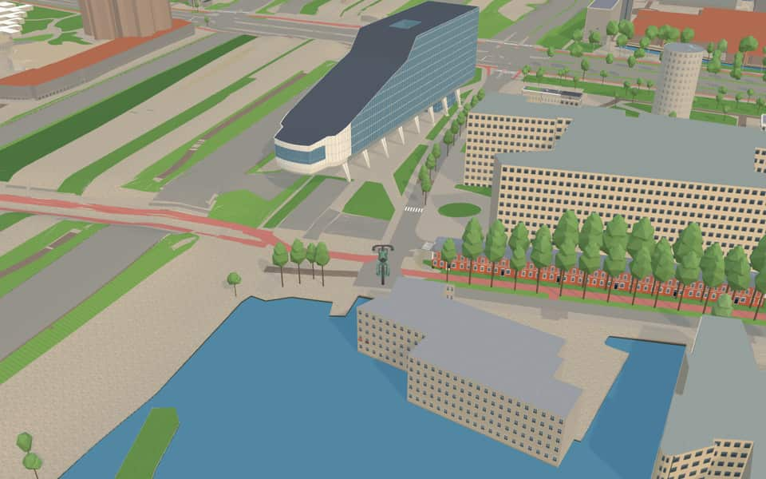
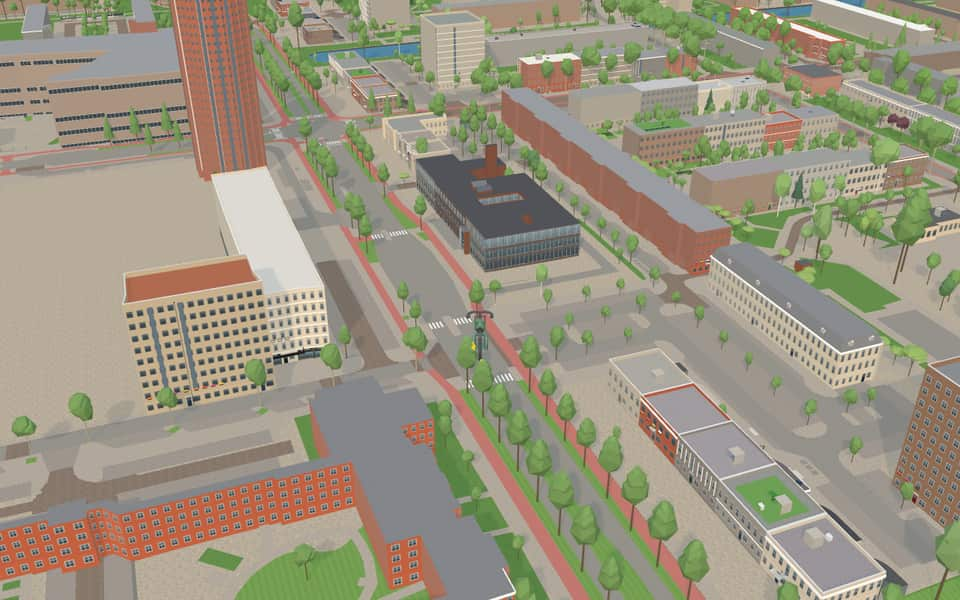
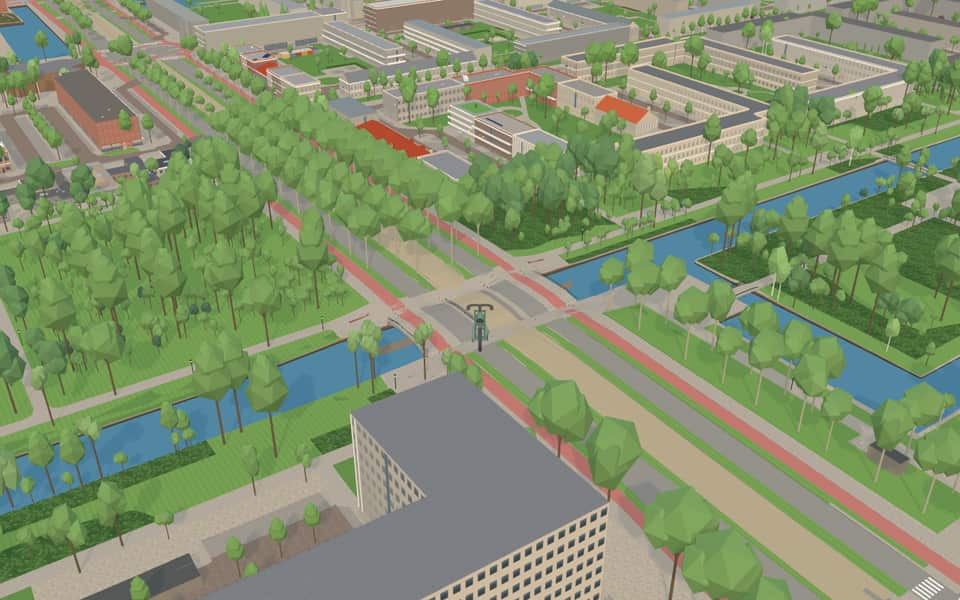

Quarter · Amsterdam
Buitenveldert
Buitenveldert is a post-war garden suburb in the Zuid borough, made up of the districts Buitenveldert-West and Buitenveldert-Oost. Areas once counted as Buitenveldert, around the Vrije Universiteit and the Zuidas, now belong to the separate Zuidas district. nl.wikipedia.org
The name. Named after the hamlet of Buitenveldert on the Amstelveenseweg, near today's Buitenveldert cemetery. nl.wikipedia.org


In the game
Frames from a ride through Buitenveldert.




6 more photos of Buitenveldert


Built here
Buildings modelled one by one for the ride.
ING House / Infinity
Politiebureau Van Leijenberghlaan, Van Leijenberghlaan 1, Amsterdam (Buitenveldert)
Did you know
Trivia the ride can show you here.
- A post-war garden suburb south of the city, planned as a garden suburb. Wikipedia
- Jewish schools, synagogues and kosher shops are part of the area’s community life. English and Dutch Wikipedia
- The name comes from an older hamlet on the Amstelveenseweg. Wikipedia
- The polder was annexed by Amsterdam in 1921, before becoming part of the 1935 expansion plan. Wikipedia
- Buitenveldert is Amsterdam's modern Jewish quarter: synagogues, Jewish schools, kosher shops and care homes gather around the Kastelenstraat. Chief Rabbi Aron Schuster opened its first synagogue in 1965. English and Dutch Wikipedia
- AndrieskerkCopper plates on the roof will eventually turn green with age. nl.wikipedia.org
- HerdenkingsmonumentArtist Mischa Rakier created the work in 2014 after a commission from Amsterdam. nl.wikipedia.org
- HerdenkingsmonumentThe diamond-shaped sculpture is crafted from ceramic-polished stainless steel with a matte finish. nl.wikipedia.org
- HerdenkingsmonumentA quote by Elie Wiesel about memory appears on the monument. nl.wikipedia.org
- 't Kleine LoopveldThe green strip spans roughly 16.5 hectares, covering about 41 acres of land. en.wikipedia.org
- AmstelparkThe name Amstelpark was transferred to this site after the original green space north of the river became Martin Luther Kingpark. en.wikipedia.org
- AmstelparkAn earlier location bearing this name was renamed in 1968 and is now known as Martin Luther Kingpark. en.wikipedia.org
- AmstelparkHistorical archives label old photos of the former northern site as 'Amstelpark, later: Martin Luther Kingpark'. en.wikipedia.org
- Amsterdamse BosThe city council officially approved the park's creation in 1928. en.wikipedia.org
35 more facts
- Amsterdamse BosGerman anti-aircraft positions and searchlights were installed near Schiphol, clearing strips of young woodland. en.wikipedia.org
- Amsterdamse BosDuring the Dutch famine of 1944–1945, further trees were cut down to provide fuel for survival. en.wikipedia.org
- Amsterdamse BosFour specific camps held Jewish men who were subjected to forced labour before many faced deportation. en.wikipedia.org
- Gijsbrecht van AemstelparkElevated rope bridges let red squirrels cross roads between the Amsterdamse Bos and Amstelpark. en.wikipedia.org
- Monument RozenoordThe memorial features scattered chairs on a concrete slab, each representing a known victim. nl.wikipedia.org
- Monument RozenoordSix additional chairs were added in summer 2018 after research recovered five new names. nl.wikipedia.org
- Brug 811Two yoke-like pillars support the span, limiting the maximum passage width to four meters. nl.wikipedia.org
- Brug 812Construction of this footpath bridge occurred around 1963. nl.wikipedia.org
- Gwijde van HenegouwenbrugArchitect Dirk Sterenberg designed the bridge while working for the Department of Public Works. nl.wikipedia.org
- Gwijde van HenegouwenbrugA tram line was installed in the center of the bridge between 1989 and 1990. nl.wikipedia.org
- M. JustbrugM. Justbrug honors Chief Rabbi Meir Just, who died in 2010 and lived near a local synagogue. nl.wikipedia.org
- M. JustbrugMeir Just frequently walked across this bridge between his home and the Jewish Cultural Center. nl.wikipedia.org
- AfwateringstochtWater boards maintain these channels by regularly dredging and cutting grass to keep dimensions. nl.wikipedia.org
- AmstelAmstel combines 'aam' (water) and 'stelle' (solid ground), meaning water on dry land. en.wikipedia.org
- AmstelThe Van Amstel family ruled the region between the twelfth and fourteenth centuries. en.wikipedia.org
- AmstelEach year the water hosts a Liberation Day concert and a rowing match. en.wikipedia.org
- Nieuwe MeerA motorboat ferry named Helena connects the north and south banks on Sundays from April to October. nl.wikipedia.org
- Ringvaart van de HaarlemmermeerpolderRingvaart van de Haarlemmermeerpolder means "ring canal" in Dutch. en.wikipedia.org
- Ringvaart van de HaarlemmermeerpolderConstruction began in 1839 to reclaim land from the lake known as Haarlem's Lake. en.wikipedia.org
- Ringvaart van de HaarlemmermeerpolderThree sections of the canal were dug through peninsulas that later became part of the polder. en.wikipedia.org
- Ringvaart van de HaarlemmermeerpolderThe main dike of Amsterdam's defense line runs diagonally across the polder, crossing the Ringvaart van de Haarlemmermeerpolder twice. en.wikipedia.org
- AmsterdamsewegHouses line the old dike, creating a unique souterrain level beneath each home. en.wikipedia.org
- BuitenveldertselaanConstruction occurred during the 1960s along the Parnassusweg near a former dike body. nl.wikipedia.org
- BuitenveldertselaanZuidas development shortened the street's northern end in 2015 to start south of De Boelelaan. nl.wikipedia.org
- BuitenveldertselaanCrossing the municipal boundary near Kalfjeslaan, the road continues as Beneluxbaan in Amstelveen. nl.wikipedia.org
- BuitenveldertselaanArchitects Zeeger Gulden and Ger Husslage created the buildings at house numbers 78 through 84. nl.wikipedia.org
- De BoelelaanThe road gained importance after the VU medical center arrived on its south side in 1957 or 1958. nl.wikipedia.org
- De BoelelaanGarden town Buitenveldert was constructed along the southern stretch during the 1960s. nl.wikipedia.org
- De BoelelaanA connection called Lex van Deldenbrug linked De Boelelaan to George Gershwinplein between 2012 and 2013. nl.wikipedia.org
- De BoelelaanThe tower at number 2 opened as the Esso Motor Hotel in 1969 before becoming a refugee shelter in 2022. nl.wikipedia.org
- EuropaboulevardThe nhow Amsterdam RAI hotel opened on the west side in 2019, followed by the Terrace Tower in 2020. nl.wikipedia.org
- EuropaboulevardWhile the naming occurred in 1958, the specific section in Buitenveldert received its name in 1961. nl.wikipedia.org
- ParnassuswegIn the 1950s, the road was extended toward Buitenveldert to reach the A10 ring road. nl.wikipedia.org
- ParnassuswegSince 1972, the road has been raised to create a highway-like appearance with lower paths for cyclists and pedestrians. nl.wikipedia.org
- ParnassuswegTram line 5 began operating on the southern section of the street in 2008. nl.wikipedia.org
Names on the map
Where the canal, bridge and street names come from.
Canals and water
- AmstelThe river to which Amsterdam owes its name and its origin.
- HoornslootProbably named after the town of Hoorn.
- IJsslootThe origin of this name is unknown.
- Kleine WeteringA wetering is a dug watercourse. Called Kleine (little) Wetering because of its size.
- Nieuwe MeerThe lake was given this name to distinguish it from the Oude Meer (old lake). From the 1950s the Nieuwe Meer was enlarged with part of the Riekerpolder and dredged to a depth of thirty metres for sand for the western garden cities.
2 other canals without a recorded story
Afwateringstocht · Ringvaart van de Haarlemmermeerpolder
Bridges
- BallenbrugBridge 516: a movable wooden bridge.
- Brug 811Bridge 811: a reinforced concrete bridge for road traffic, dated 1961 in the city's bridge register.
- Brug 812Bridge 812: a concrete bridge for pedestrians, dated 1963 in the city's bridge register.
- Gwijde van HenegouwenbrugAlso Guy of Avesnes, or Gui d'Avesnes (1253-1317), Bishop of Utrecht. He personally administered the possessions of the Lords of Amstel. Just before his consecration in Utrecht, in 1300 or 1301, he granted Amsterdam its town rights.
- M. JustbrugNamed after Chief Rabbi Meir Just (1908-2010), who served in Buitenveldert. He lived in Soetendael and so often walked over this bridge to the Jewish Cultural Centre on the Van der Boechorststraat.Bridge 803: a reinforced concrete bridge for road traffic, dated 1961 in the city's bridge register.
- WetlandbrugBridge 1541: a wooden bridge for cyclists, dated 1994 in the city's bridge register.
Streets
- 't Kleine LoopveldThe name recalls the history of Amstelland. In the sixteenth century many inhabitants of the area made their living by dredging. Dredging up the deep peat layer created large lakes, between which strips of land called loopvelden (walking fields) were left so that people could get from one village to another. One of these was the Kleine Loopveld, which was later called Kalfjeslaan. The name has now been given to a strip of parkland. The Grote Loopveld is now the Ouderkerkerlaan in Amstelveen.
- AldendrielA restored seventeenth-century castle near Mill (Noord-Brabant), originally dating from around 1500.
- AldengoorAldengoor or Aldenghoir, a castle near Haelen, close to Roermond (Limburg).
- AmsteldijkA canal dug around 1920 as part of Berlage's Plan Zuid. It connects the river of the same name with a five-way junction of canals, including the Boerenwetering, the Noorder Amstelkanaal and the Zuider Amstelkanaal.
- AmstelparkCity park near the Amstel.
- AmstelveensewegVillage. Before 1 January 1964 the municipality was called Nieuwer-Amstel. Before it was widened in 1898, the stretch of the road along the Vondelpark as far as the Overtoom was called Dubbele Buurt.
- Antonio VivaldistraatItalian composer (1678-1741). From 1703 to 1740 he was attached to the Conservatorio dell'Ospedale della Pietà, one of the four famous music schools in Venice. Vivaldi's great importance as a composer lies in the development of the violin concerto. His most famous work is 'Le quattro stagioni' (The Four Seasons), published in Amsterdam in 1725.
- ArenborgA seventeenth-century manor near Venlo (Limburg).
- Arent Janszoon ErnststraatArent Janszoon Ernst van Bassen, bailiff of Amstelland from 1569 to 1573.
- AsingaborgSeventeenth-century castle near Middelstum (Groningen), restored in 1926.
- AssumburgCastle near Heemskerk (Noord-Holland), built in the fifteenth and sixteenth centuries and restored in the seventeenth century and in 1911.
- BackershagenAn eighteenth-century country house in Wassenaar (Zuid-Holland). The name is derived from the Backer and Hagen families.
155 more streets with a story
- BeeckensteinAn old eighteenth-century country house near Velsen (Noord-Holland).
- BeethovenstraatLudwig van Beethoven (1770-1827), German composer and grand master of instrumental music. His works include 9 symphonies, 32 piano sonatas, 11 overtures and 17 string quartets.
- BeysterveldThe castle of Oud Beysterveld near Oirschot (Noord-Brabant). It was built in 1775 on the foundations of a seventeenth-century castle and was later used as a monastery.
- BleijenbeekA seventeenth-century castle near the village of Afferden (Limburg), completely burnt out in 1944 and now a ruin.
- BoeckenburgThe later name of Boechorst castle, which stood in the Boekhorstpolder near Voorhout (South Holland).
- BoeierspadA boeier is a flat-bottomed sailing yacht.
- BolesteinA castle-like house on the Vecht near Maarssen (Utrecht), originally fourteenth-century and substantially rebuilt in the seventeenth and nineteenth centuries.
- BongartA sixteenth-century castle near Bocholtz (Limburg). Today, two side wings and a round corner tower still remain.
- BorggraafA miniature castle near Lottum/Grubbenvorst (Limburg), built in the sixteenth century.
- BouvigneA castle near Ginneken (Noord-Brabant), owned by the House of Orange from 1614 to 1775. During the siege of Breda (1637) it was the headquarters of Frederik Hendrik.
- BrittenburgA sunken Roman fort at the old mouth of the Rhine off Katwijk (Zuid-Holland). In 1520, and later too, its foundations became visible on the beach in heavy storms.
- BuitenveldertselaanNamed after the Binnendijksche Buitenveldersche polder, originally a landscape of meadows and market gardens.
- BulgersteinA former castle on the Maas in Schieland, built according to tradition in the eleventh century.
- CannenburgA fourteenth-century castle near Vaassen (Gelderland), rebuilt several times since.
- ChaloenThe castle, also called Schaloen, near Valkenburg (Limburg), built in the seventeenth century and restored and altered in 1894.
- CortenbachThe originally fifteenth-century castle, now a manor house mainly dating from 1776, near Voerendaal (South Limburg).
- Crack-StateAn imposing state (a Frisian manor house) in Heerenveen (Friesland), probably built in 1608 by Hypolitus Crack.
- CronenburgA former castle near Loenen aan de Vecht. Built in 1122 and destroyed in 1296, rebuilt in 1354 and demolished in 1837. Only the outline of its foundations remains.
- DaelenbroekAn eighteenth-century castle near Herkenbosch (Limburg). One wing remains, in use as a house.
- DamloperspadA cargo ship with leeboards, similar to a tjalk.
- De BoelelaanGerrit de Boele, bailiff of Amstelland and Waterland (1354/55).
- De BorchtThe sixteenth-century castle near Baarlo (Limburg), with fifteenth-century remains. In 1473 the castle was taken by Charles the Bold.
- De CuserstraatWillem de Cuser, bailiff of Amstelland, Waterland and Rijnland in 1326/1327. Murdered by the Hook (Hoekse) nobles in 1392.
- De KlenckeA moated country house from around 1740 in Oosterhesselen (Drenthe). Another havezate (a manor with noble rights) stood here earlier, of which a wall-anchor date of 1670 and a tombstone from 1635 remain.
- DeverA castle from about 1400 near Lisse (Zuid-Holland), of which the ruin of a massive semicircular tower remains. A manor house was built against it in the seventeenth century.
- DikningeOriginally an old abbey (1325-1602), now a late Empire-style country house on the Reest near De Wijk (Drenthe). Gateposts from 1817.
- DoddendaalA castle near Ewijk (Gelderland), probably founded in the eleventh or twelfth century. The name Doddendaal dates from 1379. The building has been altered many times. In the seventeenth and eighteenth centuries its cellar served as a church for Roman Catholics.
- DoornburgThe Doornenburgh, a seventeenth-century house on the Vecht near Maarssen, altered in 1721 and again in the twentieth century. (Not to be confused with Doornenburg castle in the Betuwe.)
- DrakensteinA knightly manor (ridderhofstede) near Lage Vuursche (Utrecht), from 1640.
- DuinbeekNamed after the shrub berberis (barberry).
- EgelenburgA former country house south-east of Heiloo (Noord-Holland), built by the lords of Warmenhuizen.
- EnnemaborgA late-medieval Groningen borg (fortified manor) near Midwolde (Groningen), restored around 1700. In its present form a stately country house.
- EuropaboulevardNamed after the continent. The naming followed the resolution of the Consultative Assembly of the Council of Europe of 29 December 1957, which called on every municipality in Europe to give a square or street the name Europe, to help promote the idea of European unity. With this naming the name Westerscheldeplein (council decision of 30 January 1935) and the name Scheldestraat for part of that street (council decision of 16 February 1927) were abolished.
- FrieslandstraatThe province. Several nearby streets are named after Frisian castles.
- GaffelaarspadA ship with a flat bottom and a round stem, used mainly on inland waterways.
- GeervlietAn old little town (town rights 1381) on the Brielse Maas and the now silted-up Bernisse (Zuid-Holland).
- GenhoesGenhoes castle, or Oud-Valkenburg, near Valkenburg (Limburg), built around 1500: a late-Gothic main building of marlstone, altered and extended in the seventeenth and eighteenth centuries, and restored from 1962.
- GiessenburgA lost castle at Giessen-Oudekerk, of which some remains survive.
- Gijsbrecht van IJselsteinstraatBailiff of Amstelland and Waterland from 1358 to 1361.
- GoudesteinA castle near Maarssen on the Vecht, dating from 1754, built for the Amsterdam burgomaster Huydecoper.
- GroningenstraatThe province. The adjoining streets are named after Groningen castles (borgen).
- Groot BlankenbergA former castle, destroyed in 1381. On its site now stands the house Blankenberg, built as a convent in 1825, near Cadier en Keer (Limburg).
- Groot-EssenburgA building from 1652 near Hierden on the Veluwe, built on the foundations of a thirteenth-century castle and restored in 1929.
- Grote RuwenbergOf this castle near Sint-Michielsgestel (Noord-Brabant) only a small tower with loopholes remains. The rest was altered and extended into a reformatory.
- GuntersteinA castle on the right bank of the Vecht near Breukelen, built in the thirteenth century and lived in by Johan van Oldenbarnevelt from 1611 to 1619. The present building was put up after the French destroyed it in 1672.
- HartelsteinA former castle near Itteren (South Limburg), of which a fortified farmstead with seventeenth-century remains survives.
- HavikshorstAn old havezate (now a country house) from 1753, surrounded by a wide moat, near De Wijk (Drenthe).
- HellenburgA lost castle in the area of Goes, whose foundations have now been uncovered.
- HenkenshageA castle in Sint-Oedenrode, founded in the fifteenth century and partly in the seventeenth, altered in the nineteenth century.
- Heringa-StateA castle in Marssum near Leeuwarden, also called Poptaslot, built in the sixteenth century and restored in 1908.
- HerinkhaveOriginally a fourteenth-century house near Tubbergen (Overijssel), now a simple moated havezate from 1723.
- HillenraadtA moated sixteenth-century nobleman's house in Swalmen (Limburg), altered and enlarged in later centuries.
- Hof van GroenenProbably an earlier name of the seventeenth-century ridderhofstad (knightly manor) and manorial estate in Delfland that appears in 1771 as Groeneveld.
- HogewerfA former ridderhofstad (knightly manor), now a farm, near Oud-Beijerland, named after its former owner, Lord Hubrecht Hoogewerff.
- HoltmeulenA castle in Tegelen, Frederik Hendrik's headquarters at the siege of Venlo in 1646.
- HolyA former ridderhofstad (knightly manor) north of Vlaardingen (Zuid-Holland).
- HoningenOriginally a thirteenth-century moated castle of the lords of Kralingen, east of Rotterdam. Lumey was imprisoned here in 1573.
- ImstenradeAn old country house near Heerlen (Limburg).
- JachthavenwegThe road runs past the marinas on the Nieuwe Meer.
- JollenpadA jol (dinghy) is a small keelboat.
- KalfjeslaanThe former eighteenth-century inn on the Amsteldijk (demolished 1967), later the café-restaurant Het Kalfje.
- KanteelThe raised part of a crenellated defensive wall, with arrow slits (a merlon). The name refers to the rectangular shape of the neighbouring buildings.
- KastelenstraatThe name was given because the street runs right through the neighbourhood of castle names. The last stretch of the Kastelenstraat was renamed Zwaansvliet on 3 February 1965.
- KeverbergA castle in Kessel (Limburg), also called Kessel castle, built on the foundations of an eleventh-century stronghold and destroyed by German troops in 1944.
- KiefskampOne of the best-preserved eighteenth-century country houses, from about 1770, near Vorden (Gelderland).
- KoenenkadeAfter a former resident.
- KotterspadA fast-sailing ship (cutter), used among other things for coastal shipping and fishing. Derived from the English 'to cut'.
- KoxhornAn old country estate in Wassenaar (Zuid-Holland).
- KranenburgA former knightly manor on the Rottemeren, in Bleiswijk.
- KrooswijkhofKrooswijk or Crooswijk is a former sixteenth-century country estate on the Rotte, now a district of Rotterdam by the Crooswijk cemetery. This court was laid out, with other streets, on the route once planned for the Rotterdamseweg.
- LandskroonA former seventeenth-century country house with a hunting lodge and falconry, on the Vecht near Muiden. It was demolished long ago; a farm of the same name now stands on the site.
- LimburghofThe province. The nearby streets are named after Limburg castles.
- LoevesteinAn old castle where the Maas and the Waal meet, at Poederoijen (Gelderland), founded by Dirc Loef. It was never lived in by a noble family. In the seventeenth century it was a prison that held many well-known figures, among them Hugo de Groot, and the castle was nicknamed the Dutch Tower (of London).
- LoowaardA manor (havezate) near Duiven (Gelderland), dating from about 1550.
- MarquetteA castle in Heemskerk, so called since 1612 after Daniel de Hertaing, Lord of Marquette. The castle dates from the fourteenth century and was then a stronghold of the Cods. Its present form dates largely from 1741.
- Matenesse-hofA thirteenth-century castle on the Schie in the old manor of Mathenesse, now a district of Rotterdam.
- MensingeAn old Drenthe manor (havezate), partly surrounded by water, near Roden. It dates originally from 1381 and was rebuilt in 1728.
- MerckenburgAn eighteenth-century building in Heukelum (Zuid-Holland) with a fourteenth-century square tower in the middle of its façade, the remnant of the original castle.
- MoermondA picturesque castle in Renesse (Zeeland), badly damaged by the water in the flood of 1953. During its restoration the foundations of a large early medieval castle came to light.
- NederhovenA small moated castle in Beegden (Limburg), with the date 1614 in its wall anchors.
- NederstichtThe old name for today's province of Utrecht, as opposed to the Oversticht, which comprised today's provinces of Overijssel and Drenthe together with Oost- and Weststellingwerf and the city of Groningen.
- NeerkanneOriginally a medieval castle at Canne near Maastricht, repeatedly destroyed. Its present form dates from 1700, restored in 1955. It is also called Agimont castle.
- Nieuw HerlaerA former castle in Sint-Michielsgestel, where a convent of that name was later built. A tower with a spire remains of the original castle.
- NieuwerhoekA seventeenth-century country estate near Loenen aan de Vecht, one of the three 'hoek' houses (Ouderhoek, Middelhoek and Nieuwerhoek) founded by the Amsterdam Van Hoek family. Ouderhoek was demolished in 1838.
- NijenburgOne of the five thirteenth-century castles with which Floris V meant to subdue the West Frisians. The castle, destroyed in 1491, whose foundations can still be seen, lies just east of Alkmaar near Oudorp (Noord-Holland).
- NoordbrabantstraatThe province (Noord-Brabant). The street lies among streets named after castles in this province.
- NoordhollandstraatThe province (Noord-Holland). The surrounding streets are named after castles in this province.
- OldenallerA country house near Nijkerk (Gelderland), built in 1655 probably to a design by Jacob van Campen, on the site of an earlier castle. It was remodelled around 1850 by K.G. Zocher.
- OldengaardeA Drenthe manor (havezate) near Dwingeloo, from 1717.
- OnsenoortA fourteenth-century castle at Nieuwkuijk near Vlijmen (Noord-Brabant), of which only a massive rectangular tower remains.
- OnsteinA moated country house from 1711 near Vorden (Gelderland).
- OpveldA castle in Heer (Limburg).
- OuborgA fourteenth-century castle on the Swalm near Swalmen (Limburg), of which only the ruin of a massive octagonal tower remains.
- Oud-EhrensteinOnce a strong castle, of which medieval parts survive, on the road from Heerlen to Kerkrade (Limburg). Before 1363 this stein (fortified stone house) came into the possession of the noble Van Ederen family. The name passed to the castle and was shortened to Ehrenstein.
- OudaenA knightly manor near Breukelen, on the right bank of the Vecht, partly still medieval and rebuilt in the seventeenth century. It is one of the few castles that escaped being burnt by French troops in 1672.
- OverdamOnce a noble house, later a farm, on the Vecht between Weesp and Nigtevecht (Utrecht).
- OverijsselwegThe province (Overijssel). Several streets nearby are named after castles in Overijssel.
- OvervoordeAn old noble house near Rijswijk (Zuid-Holland).
- ParnassuswegA mountain in Greece, in Greek mythology the home of Apollo and the Muses. Today used figuratively for the realm of poetry.
- PekkendamA former estate near Diepenheim (Overijssel).
- PersijnA sixteenth-century castle near Wassenaar (Zuid-Holland), demolished in the eighteenth century, named after the Hague branch of the Persijn family.
- Piet KranenbergpadNamed after Piet Kranenberg, one of the people who saved the Olympic Stadium beside this path. In 1996, with Bram Mulder and the stadium director Otto Roffel, he set up the rescue and operating plan that led to its renovation, begun in 1998.
- PramenpadA small flat-bottomed inland boat (a pram), used mainly for carrying livestock and manure.
- PunterspadAn open, flat-bottomed boat (punter), used especially around Giethoorn.
- RadboudA square castle with round corner towers in Medemblik (Noord-Holland), founded by Floris V around 1289, partly demolished in the seventeenth century and rebuilt in 1890.
- ReimersbeekA castle in Nuth (Limburg), founded in the sixteenth century and partly demolished and rebuilt in the eighteenth. It is now a rectangular house of three wings with a seventeenth-century gatehouse and a farm from 1705.
- RhijnesteinA knightly manor at Cothen near Jutphaas on the Kromme Rijn, consisting of a residential tower and a gate from the sixteenth century; the second tower and the middle section date from around 1850.
- RietnesseThe former castle of Costijn van Sirixe in Zierikzee on Schouwen-Duiveland (Zeeland).
- RoffartA seventeenth-century country house with a gate from 1629 in Baarlo (Limburg).
- RondeelA semicircular, usually brick bastion that formed part of the city walls in the early sixteenth century, lower and more heavily built than the older wall towers. Through its meaning and its first syllable, the name refers to the round shape of the new building.
- RooswijckAn eighteenth-century country estate with towers added later, between Santpoort and Velsen (Noord-Holland).
- RupelmondeOne of the first country estates built by Amsterdam patricians near Loenen aan de Vecht in the seventeenth century, still in the style of an Amsterdam canal house.
- SandenburchA former castle near Veere, built in the thirteenth or fourteenth century by a member of the old knightly Van Sande family, and for many years home to the lords of Borssele. (Not to be confused with the still existing Sandenburg on the Langbroekerwetering.)
- SandhorstA lost medieval castle in Wassenaar, demolished in 1818 after repeated rebuilding.
- SchierstinsA fourteenth-century defensible tower house at Veenwouden (Friesland), restored in 1962. Before 1439 it came into the possession of the grey (schiere) monks of Klaarkamp Abbey.
- SchokkerspadA small fishing boat, originally from Schokland.
- SijlhoffA former castle in Leiderdorp, first built around 1292, destroyed in 1420, rebuilt in the Spanish period and finally demolished in the eighteenth century.
- SijpesteinA castle mentioned as early as 1288, destroyed and rebuilt several times. In 1911 the old foundations were uncovered and the castle was rebuilt in the old style. It lies near Loosdrecht.
- SkûtsjespadA traditional type of tjalk: a sailing vessel for sea and river work, with a round bow, a flat bottom and leeboards.
- SlangenburgA fifteenth-century castle near Doetinchem, rebuilt in the seventeenth century under General Van Baer van Slangenburg.
- SoetendaalA former country estate near Maarssen on the Vecht.
- SonneveldA medieval house of the Van Zonneveld family in Valkenburg (Limburg), demolished in 1789.
- SpangenhofThe former castle of Spangen, between Schiedam and Overschie. Spangen is now a district of Rotterdam.
- SterkenburgAn old knightly manor at Driebergen (Utrecht), of which only the heavy round tower survived demolition in 1848, with a new house built against it.
- TeilingenA thirteenth-century castle, now a ruin, at Sassenheim (Zuid-Holland), known as the place where Jacoba of Bavaria lived and died.
- Ter BoedeOriginally a medieval castle near Koudekerke (Walcheren), now a stately country house from about 1740.
- Ter HoogeA medieval castle near Koudekerke (Zeeland), substantially rebuilt and partly rebuilt anew in 1755.
- Ter KleefA former castle, built at the end of the fourteenth century and blown up by the Spanish in 1572 after the siege of Haarlem. A farm-like building, a tower and a heap of stones still remain in Haarlem-Noord.
- TjotterspadAn inland sailing yacht of shallow draught (a tjotter).
- Tommaso AlbinonistraatItalian composer (1671-1750), probably self-taught, who worked as chamber musician to Ferdinando Carlo, Duke of Mantua. Johann Sebastian Bach three times took themes by Albinoni as the starting point for his own compositions. Albinoni wrote instrumental works and some fifty operas.
- TongelaerA former fifteenth-century castle at Mill, municipality of Beers (Noord-Brabant), of which only a square gate tower remains.
- TwikkelA castle at Delden (Overijssel), built in 1347 and rebuilt and enlarged several times since.
- ValkensteinA lost castle that stood near Poortugaal on IJsselmonde (Zuid-Holland).
- ValkhofThe Valkhof, by the Waal bridge in Nijmegen, was originally founded around 800 by Charlemagne. The castle was rebuilt in 1155 by Emperor Frederick Barbarossa and demolished in 1797, apart from the surviving Carolingian chapel and some remains of walls.
- Van BoshuizenstraatKoenraad van Boshuizen was bailiff of Amstelland and Waterland from 1515 to 1530.
- Van der BoechorststraatLord Floris van der Boechorst, bailiff of Amstelland and Waterland from 1340 to 1347.
- Van HeenvlietlaanJan van Heenvliet, bailiff of Amstelland and Waterland in 1396/1397.
- Van LeijenberghlaanArent van Leyenbergh, bailiff of Amstelland and Waterland around 1400.
- Van NijenrodewegGijsbrecht van Nijenrode, bailiff of Amstelland, Waterland and Gooiland in 1357-1358. Part of the road disappeared in 1986 when the street Beysterveld was laid out.
- VijverhoefAn old knightly manor near Breukelen on the Vecht, originally of 1670 and demolished in 1812, celebrated by Vondel. The present Vijverhof, on the same site, dates from 1867.
- WalborgA seventeenth-century country house on the Maas near Laak (Limburg), of which only a ruin remains.
- WallesteinA former seventeenth-century country house near Loenersloot (Utrecht), demolished in the nineteenth century.
- WambergA manor house whose oldest wing dates from 1560, extended in 1769 and in the early twentieth century, on the Aa outside the village of Berlicum (Noord-Brabant).
- WarmeloA moated manor house near Diepenheim (Overijssel), originally of the sixteenth and seventeenth centuries and restored in 1928. It was owned by Prince Bernhard and lived in by his mother, Princess Armgard.
- WedderborgThe borg (fortified house) at Wedde (Groningen), originally built in 1362 and rebuilt in 1530 for Charles of Guelders. The remains of the old walls were uncovered in 1957.
- WeenahofThe castle of Weena, first mentioned in 1306, a moated castle at the mouth of the Rotte, within today's Rotterdam.
- WeerdesteinA castle near Nederlangbroek (Utrecht), mentioned as early as 1340 and a knightly manor in 1548: a free-standing square tower surrounded by three moats, restored in 1870. The small gatehouse dates from 1642.
- WeldamA stately manor house rising from the water near Markelo (Overijssel), built in 1644 using medieval masonry and surrounded by an eighteenth-century-style garden.
- WijenburgA sixteenth-century manor house at Echteld (Gelderland) with a late-medieval tower, altered inside in the eighteenth century and now restored, named after the lords of Wije, lords of Echteld.
- WildenborchA fortified castle of 1372, of which only a heavy gate tower remains, now the central part of the present building of 1782, near Vorden (Gelderland).
- Willem van WeldammelaanBailiff of Amstelland and Waterland from 1392 to 1395.
- ZeelandstraatThe province. It lies among streets named after Zeeland castles.
- Zuid-HollandstraatThe province. The surrounding streets are named after castles in this province.
- ZuidewijnA knightly house at Vrijhoeve-Capelle (Noord-Brabant), partly sixteenth- and partly seventeenth-century, rebuilt in 1763, with two wings at right angles and stepped gables.
- ZwaansvlietA mansion in the Beemster (Noord-Holland). Before 1965 the street was part of the Kastelenstraat.
11 other streets without a recorded story
Amsteldijk Noord · Amsterdamseweg · Ballenbrug · Bosbaanweg · Kostverlorenweg · Margriete van Clevelaan · Nieuwe Kalfjeslaan · P Amstelpark · Rentmeesterslaan · Sportas · Wetlandbrug